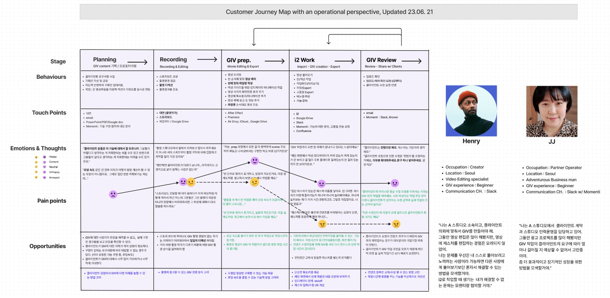
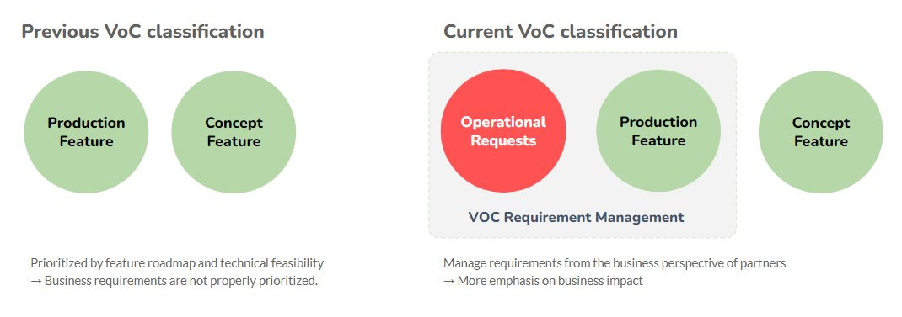

Momenti GIV Studio, 2023 · Lead UX 리서처
VOC를 개발 우선순위로 바꾸다
높은 우선순위의 VOC가 짧은 기간에 쏟아졌지만, 요약된 VOC만으로는 크리에이터의 실제 작업 맥락을 알 수 없었습니다. 크리에이터 스튜디오를 직접 찾아 작업을 관찰한 결과, 문제는 모바일과 PC를 오가며 끊기는 워크플로우와 비즈니스 기준이 없는 VOC 관리였습니다. 개발자와 클라이언트 사이를 조율해 VOC 규칙을 바꿨습니다.
20% 단축크리에이터 작업 시간
1주현장 관찰 3일, 분석·설계 2일, 공유 1일
만족도 상승클라이언트
바꾼 것
우선순위 기준: 기능별 분류에서 비즈니스 임팩트 기준으로 바꾸고, Jira 주간 VOC 리뷰를 운영했습니다.
개발 조직 합의: 리드 엔지니어가 크리에이터 작업을 직접 따라 해 보는 Walkthrough를 열었습니다.
신규 사용자 안내: 새 사용자를 위한 매뉴얼을 Confluence 기반으로 만들었습니다.
현장 관찰에서 찾은 것
인터뷰로는 보이지 않는 우회 방법을 찾기 위해, 숙련 크리에이터의 수정 작업을 파일 다운로드부터 Export까지 따라가며 관찰했습니다(Contextual Inquiry).
워크플로우 단절: PC 앱의 사용성보다, 작업이 모바일과 PC로 갈라지며 생긴 전환 비용이 핵심이었습니다.
VOC에 비즈니스 기준이 없음: 로딩 시간, 작업 시간처럼 매출에 직결되는 이슈가 기능 분류 속에 묻혀 있었습니다.
NAVER에 가져갈 것: 의료진 피드백과 AI 응답 품질 이슈를 임상 영향과 사용 빈도 기준으로 정렬해 개선 순서를 정합니다.

